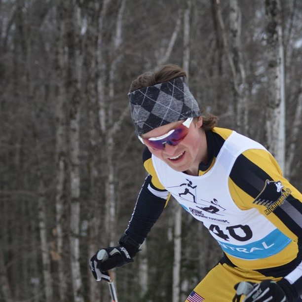
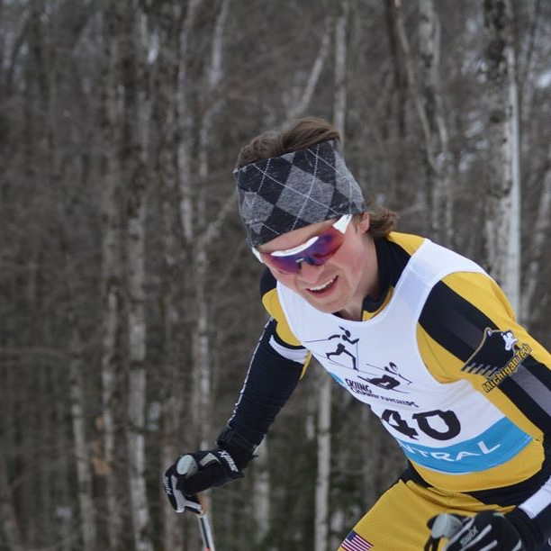

After finishing runner up last year, Woodbeck sprinted his way to the top spot on the podium. This was Woodbeck's 2nd finish on the Whitepine podium and his 6th podium finish this year.
When asked about his race Woodbeck replied, "Here we go Barb!" When asked what that meant, he was unable to clarify. "The morsel of the story," said Woodbeck "is that you should be fine as long as you keep her out of the cabbage. These foodstamps won't buy mom's spaghetti, so sometimes you've just got to give er. I went out there today to impress my coach Mike Muha, my girlfriend Stephanie, and my sister because she's really hot. If I had to describe my skiing today in one word it would have to be inadequa... I mean adequate, very adequate."
After being asked to comment on the performance of former teammate and 2nd place finisher Sam Holmes, Woodbeck had some harsh criticism. Woodbeck quoted, "I don't even think he even lifts. That being said, he can drink way more than I can and his dick is huge."
After having two 50k races shortened due to lack of snow, the racers head to Traverse City next weekend for the 50k Vasa ski race. This will be a last chance for the racers to ski a marathon distance before the 'Merica! Race of the Century.